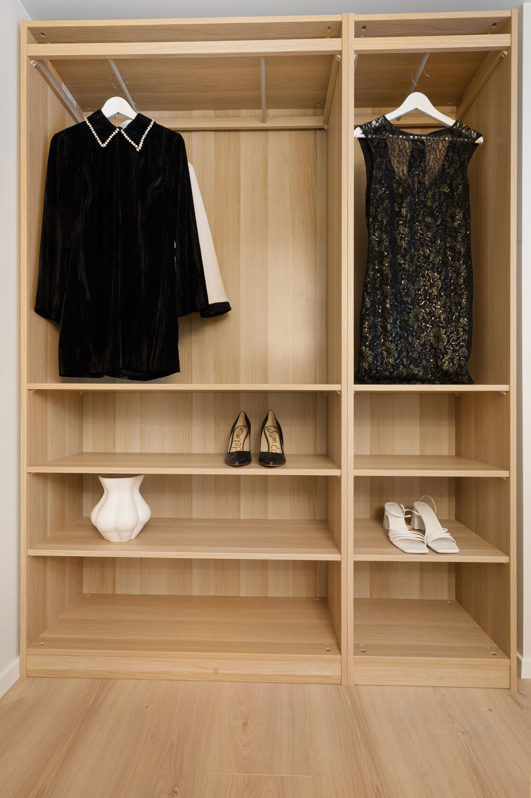

Construir un armario sostenible no significa comprar toda tu ropa nuevamente. La clave está en elegir prendas de calidad, aprovechar lo que ya tienes y consumir de una forma mucho más consciente.
"La moda más sostenible es aquella que ya tienes en tu armario."

1. Buy Less, Choose Better
Antes de comprar una nueva prenda, pregúntate si realmente la necesitas. Elegir ropa de buena calidad hará que dure muchos más años y reducirá el desperdicio.
Apostar por prendas básicas y versátiles también permite crear más combinaciones con menos ropa.
2. Extend the Life of Your Clothes
Lava tu ropa siguiendo las instrucciones de la etiqueta, realiza pequeñas reparaciones cuando sea necesario y dona aquellas prendas que ya no utilizas.
Cuidar correctamente tu ropa reduce el impacto ambiental de la industria textil y también ayuda a ahorrar dinero.